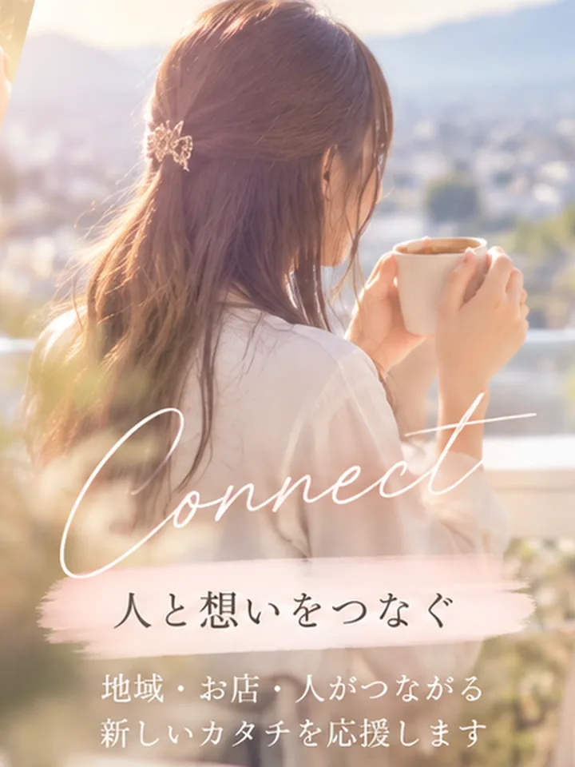
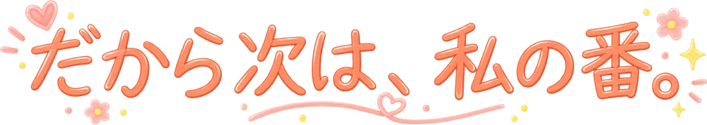
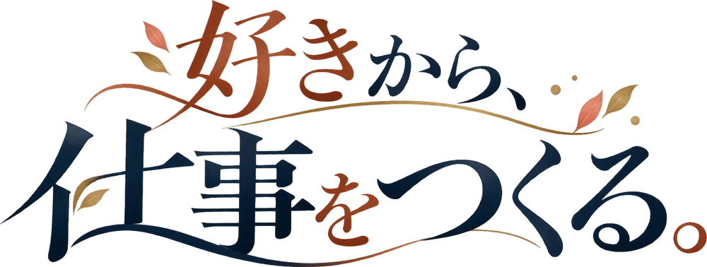

Hope Bridge のはなし
誰かの「ありがとう」が、私の続ける力になる。


これまで、障害や苦しいこと、ひとりきりの孤独と向き合ってきました。
思うようにいかない日のほうが、きっと多かったと思います。
それでも今ここにいられるのは、手を差しのべてくれた人、話を聞いてくれた人、そっと背中を押してくれた人がいたから。人とのつながりとサポートに、何度も救われてきました。

受け取ったやさしさを、同じように誰かへ手渡したい。
「私にできることは何だろう？」と考えたとき、心に浮かんだのがこの言葉でした。

この言葉を信じて、ひとつずつ形にしてきたことが、手描き動画やイラスト、Webづくりという今の仕事につながっています。
大きなことじゃなくていい。小さなことでも、誰かの何かの役に立てたら。
そのときにもらえる「ありがとう」が、私が続けていく源です。
Hope Bridge（希望の橋）は、受け取ったやさしさを次の人へつなぐための橋。
あなたの想いも、届く形にするお手伝いをさせてください。
向き合う苦しさや孤独と向き合ってきた日々
つながる支えてくれた人のおかげで今がある
手渡す次は私が誰かの希望の橋に

りーたん

手描き動画・Webデザイン・LINEスタンプ・似顔絵・印刷物まで手がけるクリエイター。「大人の本気の遊び」を仕事にしながら、人と人をつなぐお繋ぎ活動もしています。